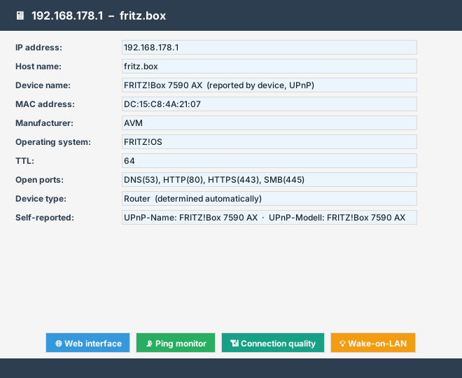
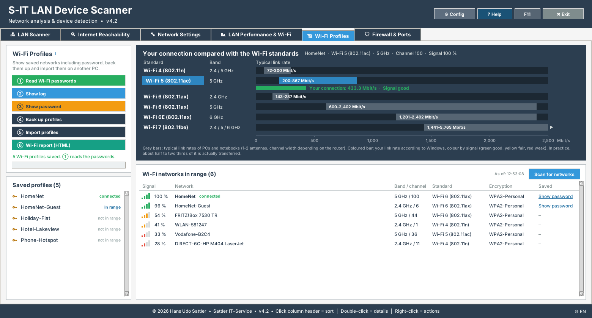
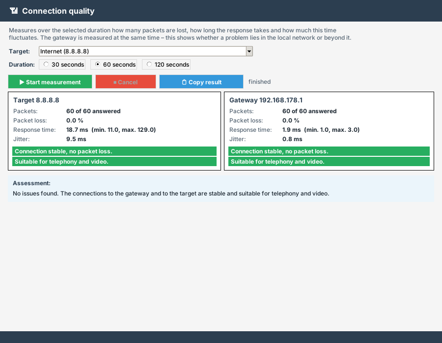
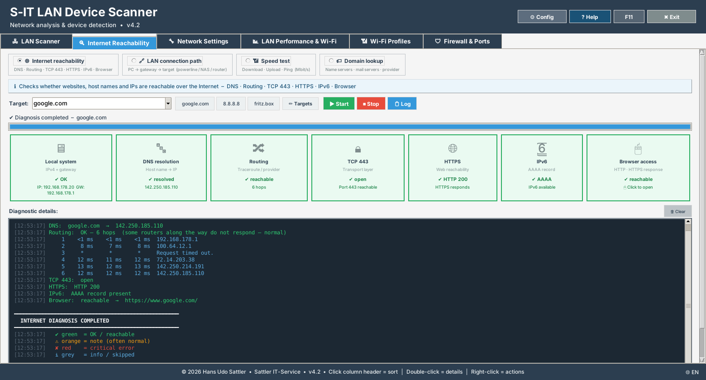
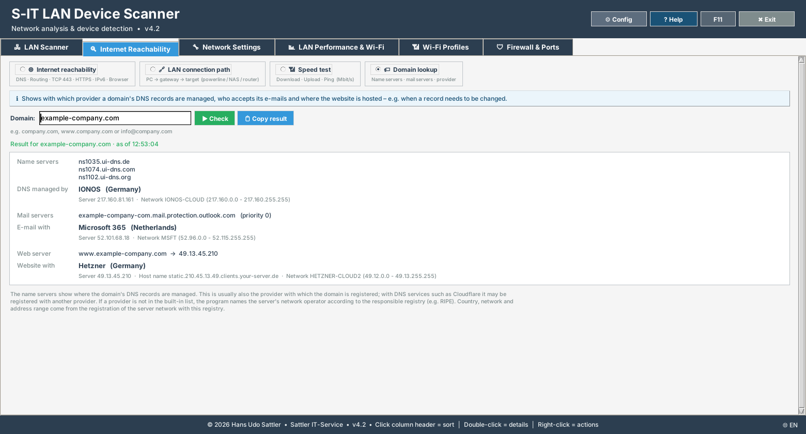
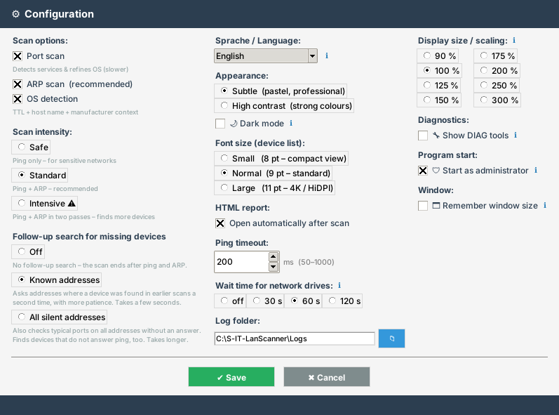
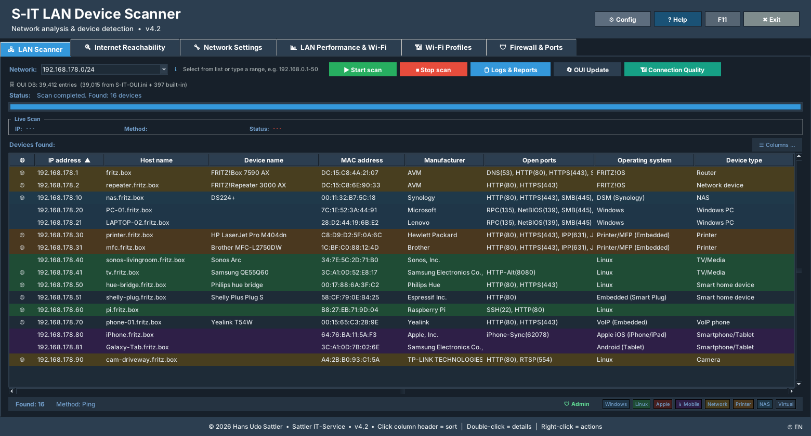

Network scan
Finds the devices on your LAN and Wi-Fi by ping and ARP and shows IP address, host name, MAC address, manufacturer, operating system and open ports. The ARP scan uses the built-in Windows function – no additional installation is needed.
Device type and device name NEW
Each device is assigned a type based on several clues – from router, printer and NAS to camera, smart home device and VoIP phone. The row colour follows the type. The “Device name” column shows what a device reports about itself on request; right-click lets you set name, manufacturer and type yourself.
Follow-up search for missing devices NEW
Addresses where a device was found in earlier scans are asked a second time with more patience. Optionally, the follow-up search checks typical ports on all silent addresses – this also reveals devices that do not answer ping.
Wi-Fi profiles NEW
Shows the Wi-Fi networks saved on this PC including their passwords, backs them up and imports them on another PC. A chart places your own connection among the Wi-Fi standards from Wi-Fi 4 to Wi-Fi 7, a table lists the Wi-Fi networks in range. The Wi-Fi report sums everything up in an HTML file, without passwords.
Internet reachability
Checks DNS resolution, routing, TCP 443, HTTPS, IPv6 and browser access in a tile overview, plus the connection path within the LAN and a speed test with ping, download and upload.
Domain lookup NEW
For a domain, web address or e-mail address it shows the name servers, mail servers and web server with provider, country and address range. The result can be copied as text, for example for an e-mail to a customer.
Connection quality NEW
Measures packet loss, response time and jitter for 30, 60 or 120 seconds – to the target and to the gateway at the same time. The comparison shows whether a problem lies in your own network or beyond it, and rates the suitability for telephony and video.
LAN performance & Wi-Fi
Continuous test for shares and network drives such as U: with write and read rate, live chart and measurement log. NAS disks in standby get a waiting time. The tiles show the state of the LAN and Wi-Fi adapters.
Network settings
Checks network profile, sharing, SMB versions, services and firewall – SMB1 separately for client and server. Repair functions for DNS, NetBIOS and ARP cache, TCP/IP stack and Winsock.
Firewall & ports
If a device is visible but not reachable, the tab checks ping, ports and firewall and adds a suitable exception. Ports on this PC can be opened, with templates and a check beforehand. Your own rules can be removed at any time; rules from others remain untouched.
Logs & reports
Every scan can be saved as an HTML report – with the same device types and colours as the device list. The log manager shows all scans and compares two of them: new and missing devices at a glance.
OUI update within the program NEW
The manufacturer database is complete from the start and can be updated directly within the program from the IEEE sources. Your own assignments are retained.
Nine languages NEW
Program, help, setup and uninstaller in Deutsch, English, Nederlands, Español, Français, Italiano, Polski, Hrvatski and Čeština. The results of all checks are the same on every Windows, whatever its language.
Dark mode & scaling NEW
A dark mode for all windows, plus a display size from 90 to 300 % – independent of the Windows scaling. The main window opens on the monitor and at the position where it was last.
Diagnostics (DIAG)
For testers and support: a diagnostic file with shortened MAC addresses, optionally including the device detection and its reasoning for each device. Can be switched on under ⚙ Config.







The current version is available in the release section on GitHub. The help is included in the program and can also be read here without downloading:
| Component | Requirement |
|---|---|
| Operating system | Windows 10 / Windows 11 (64-bit) |
| Rights | The setup requests administrator rights. The program starts as administrator (can be switched off); the rights are required for Wi-Fi profiles, network repair and firewall & ports, and recommended for the ARP scan |
| Additional software | none |
| Included | Setup, uninstaller, help in nine languages, changelog, licence and disclaimer in nine languages |
797c3a7b9510706e432f5c5d1b79845b840252b784dc0d9c66400741b42b3874
To check it, open PowerShell in the folder where the file is located: Get-FileHash .\sit-lsc-V4-2_latest.zip
If the value matches, the file is unchanged.
- Nine languages: program, help, setup and uninstaller; the language is selected under ⚙ Config, the setup follows the Windows language
- Wi-Fi Profiles tab: show, back up and import saved Wi-Fi networks including passwords; comparison of Wi-Fi standards, networks in range, Wi-Fi report as HTML
- Domain lookup: name servers, mail servers and web server of a domain with provider, country and address range
- Device type and device name: type from several clues, row colour by type, name as reported by the device; your own information via right-click
- More devices found: ARP scan with the built-in Windows function, follow-up search for missing devices in three levels
- Connection quality: packet loss, response time and jitter to the target and to the gateway, with a rating for telephony and video
- OUI update within the program: complete manufacturer database from the start
- Dark mode for all windows; LAN continuous test also on network drives
- Installation: one setup for installed and portable use; existing data is taken over
All details and earlier versions are listed in the full changelog (German).
The S-IT tools are developed and maintained free of charge. I would appreciate a small contribution:
PayPal – tool-entwicklung@sattler-it.de